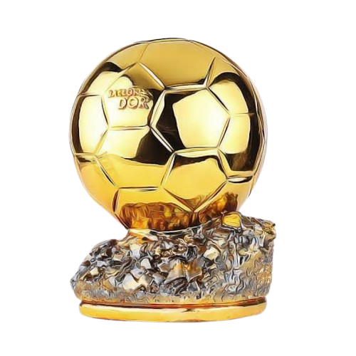
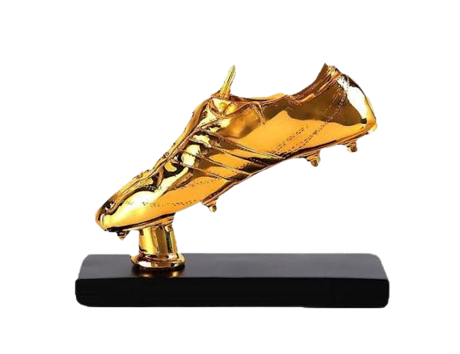
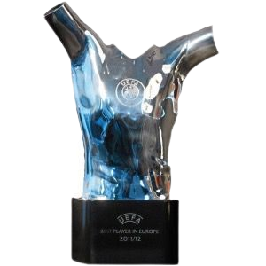
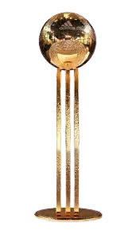
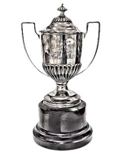
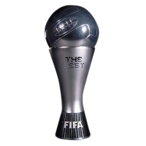

Trophy Individu

Ballon d'Or
- 2009
- 2010
- 2011
- 2012
- 2015
- 2019
- 2021
- 2023

European Golden Shoe
- 2009
- 2011
- 2012
- 2016
- 2017
- 2018

UEFA Best Player in Europe

Best Player World cup

LaLiga Top Score
- 2009
- 2011
- 2012
- 2016
- 2017
- 2018
- 2019
- 2020

The Best FIFA Men's Player
Prestasi Individu Messi
- Top Scorer Copa América 2021
- Top Scorer Leagues Cup 2023
- Pemain Terbaik Copa América (2015 & 2021)
- Pemain Terbaik Finalissima 2022
- Pemain Terbaik Liga Champions UEFA (2009, 2011)
- Pemain Terbaik Piala Dunia Antarklub FIFA (2009, 2011)
- Pemain Terbaik Piala Dunia U-20 (2005)
- Pencetak gol terbanyak sepanjang masa Barcelona (670+ gol)
- Pencetak gol terbanyak sepanjang masa La Liga (470+ gol)
- Assist terbanyak sepanjang masa La Liga
- 50+ gol dalam 10 musim La Liga berturut-turut
- Gol terbanyak dalam 1 musim La Liga (50 gol - 2011/12)
- Gol terbanyak di satu klub dalam sejarah
- Gol terbanyak di El Clásico (Barcelona vs Real Madrid)
- Ballon d’Or, FIFA The Best, dan Laureus dalam 1 dekade